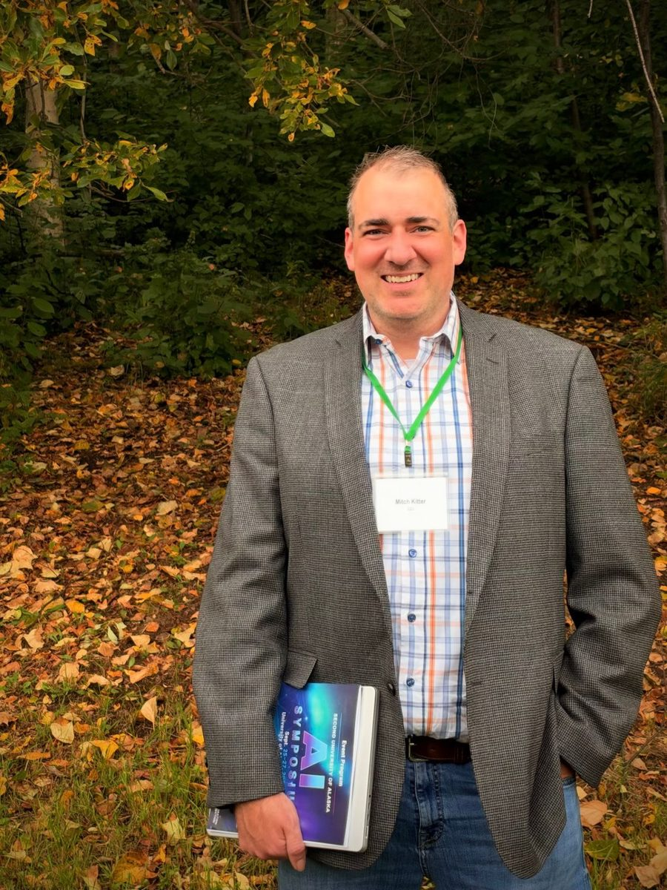

This past weekend, the University of Alaska hosted its second AI Symposium, three days (September 25 to 27) of faculty, students, researchers, IT leaders, and industry partners from across the UA system working through what artificial intelligence means for teaching, research, operations, and the state as a whole. The audience joined both in the room and online, and the conversations ran well past the scheduled sessions.
I was invited to moderate the Infrastructure, Security & AI panel on Saturday morning, and it was one of the best conversations I've been part of this year. The questions we took on, about power, connectivity, attackers, and governance, sit right at the center of my Ph.D. research at the University of Alaska Fairbanks and of my day job leading security architecture and planning at GCI. Hearing them debated by the people who build and defend this infrastructure every day was energizing.

The panel
I was fortunate to share the stage with three leaders who see AI's infrastructure and security impacts from very different vantage points:
- Shawn Williams, Vice President of Government Affairs and Strategy at Pacific Data Port, a 45-year Alaskan, former Assistant Commissioner of Commerce for the State of Alaska, and a fellow UAF Ph.D. student studying regulatory economics and public health.
- Benjamin Shier, Chief Information Technology Officer for the University of Alaska System, who leads IT strategy and shared technology services for UAA, UAF, and UAS.
- Ryan McDaniel, Assistant Vice Chancellor and Chief Information Officer at UAA, with 25 years in higher education IT and doctoral research on international cyber conflict.
We were also joined from the audience by Jeannette Okinczyc, the University of Alaska's Chief Information Security Officer, who brought the view from the security operations floor. Questions came from the room and from the online audience, relayed by symposium host Andrew Harnish.
I framed the hour around a tension the university has to hold in balance. UA is a customer of AI infrastructure and, increasingly, a potential host of it. It serves researchers, students, faculty, and staff whose needs and attitudes toward AI differ widely. And it has to govern all of that in a way that enables the institution's mission, stays secure, and reflects its values. Here's what stood out.
1. If AI demand doubles, power runs out first
I asked each panelist a simple question: if AI demand in Alaska doubles over the next three years, what runs out first? Power, middle-mile capacity, skilled people, or governance capacity?
Shawn didn't hesitate. Pacific Data Port has fielded interest in placing GPU clusters at its Talkeetna teleport, and when the company asked its utility what additional power was available, the answer was three megawatts. Getting roughly 30 more megawatts from the Intertie would cost somewhere between $30 and $40 million, and at that point, as Shawn put it, things "start to not pencil out."
"I can tell you right now that it's definitely power first, because it doesn't exist."
Shawn Williams, Pacific Data Port
He ranked middle mile second, people third, and governance last, not because it doesn't matter, but because "it'll come along and it'll just be a little late." Ryan agreed power becomes the binding constraint as demand grows, though he argued governance is the biggest vacuum today. He also made a point I hadn't fully considered: frontier AI providers are currently subsidizing usage, and as prices eventually rise, organizations will shift more work to local models running on their own hardware. That drives demand for local compute and co-location, and in Alaska that demand lands squarely on the power grid.
Ben added a wrinkle that I think deserves more attention. After years of moving workloads out of in-state data centers and into the cloud because the economics made sense, institutions are now asking whether AI makes it worth running things locally again. If the answer is yes, "power becomes your number one issue, because we just don't have that kind of excess power." Ryan sharpened it further: it isn't only capacity, it's cost. Elsewhere, compute simply migrates to wherever the kilowatt-hour is cheapest. If Alaska wants AI capacity that isn't dependent on an undersea cable to the Lower 48, it doesn't have that option.
2. Latency and sovereignty decide what belongs in Alaska
That led naturally to the question of which workloads actually make sense to host here. Shawn walked the room through the physics: a round trip from Anchorage to Seattle over fiber runs roughly 40 to 50 milliseconds, but from the North Slope, down the backbone to Seattle, and back, it can approach 80 to 90. Low-earth-orbit satellite service sits in a similar range, while geosynchronous links can reach 650 milliseconds.
For much of today's AI use, latency barely matters. As Ryan noted, if an agent is building an app for you, you let it run and come back later. But the panel converged on a short list where it matters a great deal:
- Real-time security response. In Ryan's words, "if your AI-based response is not keeping up with the AI-based attack, then it's a war of attrition and you're losing."
- Healthcare. Dr. Helena Wisniewski, who recently spoke with the Alaska Native Tribal Health Consortium on AI in medicine, pointed out that AI-supported care in rural villages, care that could spare patients a trip to Anchorage, makes latency critical.
- Research at scale. Ben described how working with very large research data sets changed his own cloud-first thinking and made a case for keeping some compute on-premises.
- Defense and data sovereignty. Shawn summed it up: defense, healthcare, and data sovereignty are all good reasons for localized hosting.
An audience member added what I'd call the third leg of the stool. Beyond economics and performance, Alaska's distance from the rest of the country makes domestic and national security a distinct factor. Models that work well in the Lower 48, where data centers can be mirrored across many regions, don't translate cleanly to a state that already has connectivity constraints. Another participant noted that the most capable frontier models are exactly what defenders will need to keep up with AI-discovered vulnerabilities, so Alaska will likely need hybrid capability: strong local capacity, plus access to frontier models. The piece I keep returning to is the ability to respond independently of our connections to the Lower 48 when those connections are degraded or cut.
3. Attackers are adopting AI as fast as defenders
When I asked what single AI-driven change had most altered their infrastructure or security planning in the last 18 months, Ben's answer was immediate: phishing. Despite years of anti-phishing investment, AI-generated phishing has become faster and more sophisticated, driving a significant increase in successful attacks, including attempts to reroute employee paychecks.
Jeannette put numbers to it. Her team's daily time spent responding to phishing, pulling messages from inboxes, contacting users, resetting credentials, grew from about 90 minutes a day to 12 to 14 hours a day over roughly a year. A small team simply could not keep pace, so the university invested in AI-driven phishing response and began automating parts of incident response, using local models to evaluate the likelihood of a false positive before letting automation act. It has already paid dividends. Her summary was blunt: "people can't keep up with AI."
Asked which control she was least confident in, she named the one most security leaders would: vulnerability management and patching. Ryan predicted it will get harder, not easier, as vendors use AI to find flaws in their own products and push fixes faster than organizations can absorb them. He also raised a quieter consequence: attribution. Investigators have long identified attackers by their fingerprints, familiar tooling, code habits, and techniques. When an attacker simply tells an AI to "go hack," those fingerprints blur, and knowing who is behind an intrusion gets harder still.
Ben captured the paradox of the moment in a single line:
"Even though the castle walls are higher, the enemy has tanks that are 10 times more capable than five years ago."
Benjamin Shier, University of Alaska System
An organization can meaningfully improve its security posture and still end up relatively less secure, because the threat is improving faster. As Ben said, it depends on the day.
4. The perimeter has moved to identity and non-human actors
Ryan's answer to the 18-month question is the one I've thought about most since. Building an application used to mean asking IT to build it. Now anyone can build their own app or agent in an afternoon, and what they show up asking IT for is data.
"So the perimeter that we control has shifted."
Ryan McDaniel, University of Alaska Anchorage
That shift creates two new layers of work. One is infrastructure: integrations, API control, and control over how agents interact with systems through protocols like MCP. The other is policy: the rules of play for self-built apps, such as requiring code to live in a managed repository where security teams can scan it for mistakes like secrets left in source, which, as Ryan noted, agents will absolutely do.
Then there's identity. If a business process requires a human in the loop, authorization has to enforce that. When an AI agent logs into an ERP system on your behalf, it shouldn't inherit everything you can do. It "should be able to do some subset of what I can do, not all of it," which means agents need their own credentials and their own scoped authorizations. Most identity infrastructure was never designed for that.
The policy discussion reinforced the gap. Across the panel, written AI policies, assessed tools, and published guidance exist, but the systemic controls to see or stop inappropriate data sharing largely don't yet. Shawn noted that the biggest vulnerability remains the human who pastes something proprietary into an unapproved tool. Ryan described banning one meeting-transcription tool that was spreading through the community almost like a worm, and made the important point that a single approved list doesn't fit a university: what's appropriate for institutional data differs from what's appropriate for research or teaching. The honest summary is that policy is ahead of enforcement, and identity, access, and governance for non-human actors are now core security work.
5. What Juneau should know
In a lightning round, I asked what good AI infrastructure policy looks like for Alaska. Shawn suggested repurposing the Alaska Broadband Office, created to distribute federal broadband funding, toward a broader mandate for Alaska's telecommunications infrastructure. Ben tied everything back to energy: so much of what the state can do in AI, local models, and cybersecurity depends on solving its energy challenges. And Ryan urged legislators to look beyond technology to the societal and economic impacts, which he described as "industrial revolution times five."
Diane Hirschberg from UAA pushed the energy question further from the audience: if growing demand can lower energy costs over time, and if sovereign AI capacity is a genuine security and productivity issue for Alaska, what investment should the state be willing to make, and how do we have that conversation? It's the right question, and it doesn't have an easy answer.
Why this matters for my research
My dissertation examines the cyber and physical security and resilience of Alaska's critical telecommunications infrastructure, and in particular how the state's telecom security leaders prioritize risk when resources are finite. This panel surfaced nearly every thread I'm pulling on:
- Interdependence. Telecommunications and energy are inseparable in Alaska. Compute ambitions here live or die on power, and the resilience of our networks depends on the resilience of the grid that feeds them.
- Geography as a risk factor. Latency, limited path diversity, and reliance on long-haul links to the Lower 48 aren't abstractions. They shape what can be hosted here, how quickly we can respond to an incident, and how we operate if a link goes dark.
- Resource-constrained defense. A phishing workload that grows from 90 minutes to 14 hours a day is exactly the kind of pressure that forces leaders to choose between competing risks. Understanding how those choices get made is at the heart of my research.
- Governance lag. When policy moves slower than adoption, and controls lag behind policy, risk accumulates in the gap. Non-human identity may be the clearest example we have right now.
I left the room with more questions than I brought, which is the best outcome a panel can have.
Thank you
Huge thanks to Shawn Williams, Benjamin Shier, and Ryan McDaniel for their candor and insight, and to Jeannette Okinczyc for jumping in from the audience. Special thanks to Dr. Helena S. Wisniewski and Andrew Harnish for organizing such a thoughtful event, and to everyone in the room and online who asked questions and pushed the conversation forward.
And one fun full-circle moment: years ago, I was a student in Helena's first AI course at the University of Alaska Anchorage College of Business and Public Policy. That course laid part of the foundation for my being able to moderate this conversation. It was a privilege to be back in a room she helped build.
Let's keep the conversation going
If you work on security, resilience, or infrastructure for Alaska's critical telecommunications, I'd love to hear how these questions look from your seat.
Reach out at mrkitter@alaska.edu or connect on LinkedIn.